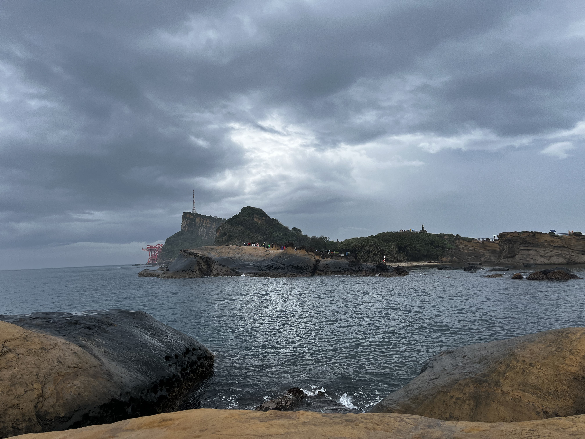

Mindmap English
This is the mindmap about for my English travel writing. It is about Yehliu Geopark, filled with unique-looking rock formations and views.

My Mindmap about Yehliu Geopark is used to help me write a travel writing about Yehliu Geopark, it has questions that I need to answer in my travel writing, such as the location, the rocks, and other things in Yehliu Geopark, photos so that the readers know what it looks like and the words to help describe the place.
What I got from Yehliu Geopark is that there were many different and unique rocks, they form because of ocean corrosion. The rocks have different shapes, from a queen's head to a fairy's shoe. There was also many breathtaking views of the ocean and the rocks. It is located in Keelung, Taiwan and around 2 km big.
